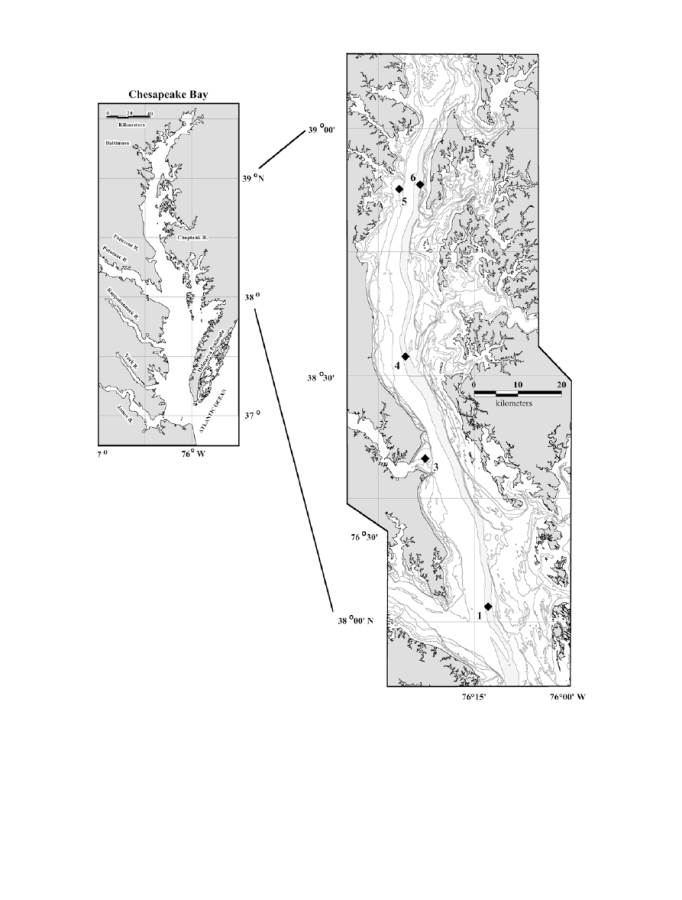
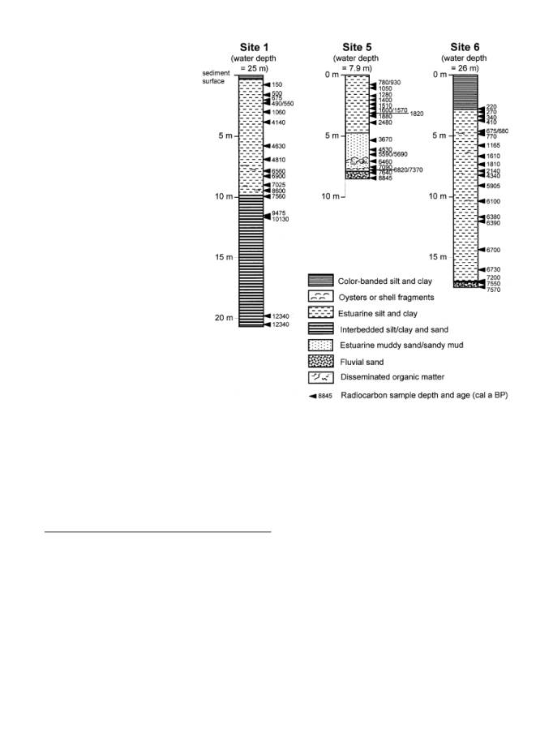
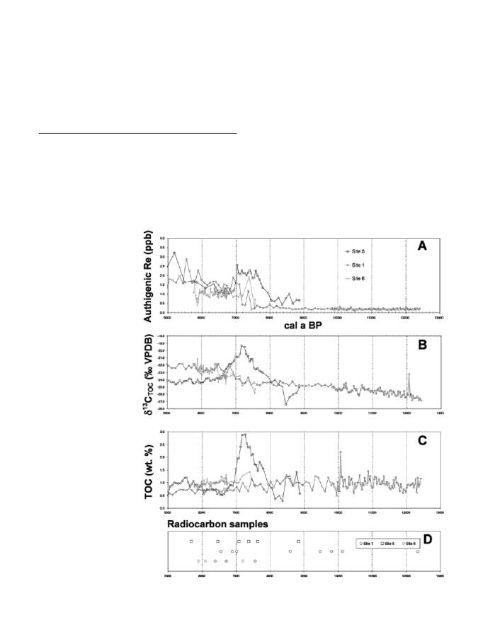
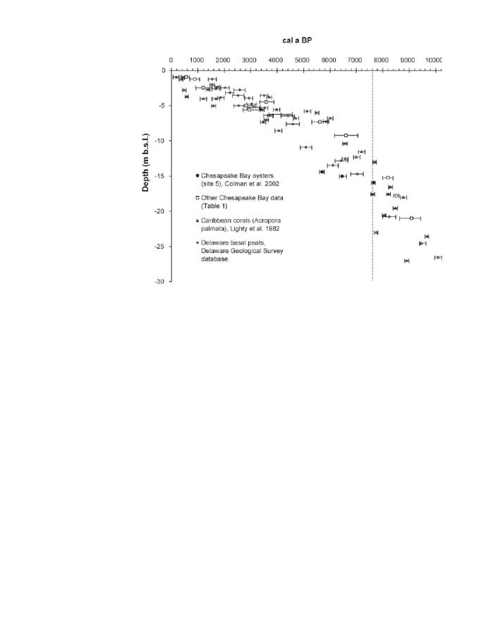

University of Nebraska - Lincoln
DigitalCommons@University of Nebraska - Lincoln
USGS Staff -- Published Research
US Geological Survey
1-1-2003
Birth of the Modern Chesapeake Bay Estuary
Between 7.4 and 8.2 Ka and Implications for Global
Sea-Level Rise
John F. Bratton
U.S. Geological Survey, Woods Hole Field Center, 384 Woods Hole Rd., Woods Hole, Massachusetts 02543-1598, USA
Steven M. Colman
U.S. Geological Survey, Woods Hole Field Center, 384 Woods Hole Rd., Woods Hole, Massachusetts 02543-1598, USA
E. Robert Thieler
U.S. Geological Survey, Woods Hole Field Center, 384 Woods Hole Rd., Woods Hole, Massachusetts 02543-1598, USA
Robert R. Seal II
U.S. Geological Survey, 954 National Center, 12201 Sunrise Valley Dr., Reston, Virginia
This Article is brought to you for free and open access by the US Geological Survey at DigitalCommons@University of Nebraska - Lincoln. It has been
accepted for inclusion in USGS Staff -- Published Research by an authorized administrator of DigitalCommons@University of Nebraska - Lincoln.
Bratton, John F.; Colman, Steven M.; Thieler, E. Robert; and Seal II, Robert R., "Birth of the Modern Chesapeake Bay Estuary
Between 7.4 and 8.2 Ka and Implications for Global Sea-Level Rise" (2003). USGS Staff -- Published Research. Paper 285.
http://digitalcommons.unl.edu/usgsstaffpub/285
John F. Bratton Æ Steven M. Colman
E. Robert Thieler Æ Robert R. Seal II
Birth of the modern Chesapeake Bay estuary between 7.4
and 8.2 ka and implications for global sea-level rise
Received: 10 September 2001 / Accepted: 15 September 2002 / Published online: 8 November 2002
Ó Springer-Verlag 2002
Abstract Two major pulses of sea-level rise are thought
to have taken place since the last glacial maximum –
meltwater
pulses
(mwp)
1A
(12 cal ka)
and
1B
(9.5 cal ka). Between mwp 1B and about 6 cal ka, many
of the complex coastal ecosystems which ring the world’s
oceans began to form. Here we report data for rhenium,
carbon isotopes, total organic carbon, and fossil oysters
from Chesapeake Bay which span the transition from
fresh to brackish water conditions in the bay in the mid-
Holocene. These data constrain sea-level change and
resulting environmental change in the bay. They indicate
that the transition was rapid, and that it was produced
by (1) a third pulse of rapid eustatic sea-level rise, or (2)
a geometry of the prehistoric Chesapeake Bay basin
which predisposed it to a nonlinear response to a
steadily rising sea level. Similar nonlinear changes in
vulnerable coastal environments are likely to take place
in the future due to polar warming, regardless of the
timing or rate of sea-level rise.
Introduction
Based on fossil corals (Lighty et al. 1982; Fairbanks
1989) and the initiation of formation of modern deltas
(Stanley and Warne 1994) and other coastal features,
such as salt marshes and barrier islands, the rapid rate of
eustatic sea-level rise during the early to middle Holo-
cene appears to have slowed considerably by 6 cal ka, to
about 1.5 mm year
–1
. Details of sea level during the
transition interval from rapid rise to slow rise, however,
are not as well constrained as other parts of the Holo-
cene record. For example, most peat underlying modern
salt marshes which are used as proxies for sea level
postdate this time; older, submerged or buried peat is
commonly difficult to find, hard to sample, and hard to
distinguish from freshwater peat. Constraining the de-
tails of the prehistoric transition in the rate of sea-level
rise has some urgency, however, because the near-still-
stand since about 6 cal ka may not be the ultimate
highstand of the current interglacial; future, abrupt rises
appear entirely possible (Oppenheimer 1998).
In this study we examine long sediment cores col-
lected from shallow and deep sites in the Chesapeake
Bay estuary which are expected to record the transition
interval in sea-level rise. We combine well-dated profiles
of sediment geochemistry from these sites with bathy-
metric, sedimentological, and faunal data. With these
data sets we reconstruct a continuous history which
spans the period of 9 to 6 cal ka and clearly shows the
transition from fluvial fresh to consistently brackish
conditions – i.e., the birth of the modern Chesapeake
Bay estuary.
Background
Chesapeake Bay is the largest estuary in the United
States. It has a surface area of 11,100 km
2
and is over
300 km long, with an average width of 20 km. Like
other coastal-plain estuaries, Chesapeake Bay formed
during the later stages of retreat of the continental ice
sheets of the last glaciation. The ocean then flooded the
paleo-river valley of the Susquehanna River and its
tributaries which had been exposed during the glacial
lowstand (Colman and Mixon 1988; Colman et al.
1990). The average depth of Chesapeake Bay is 8 m but
an axial channel, a remnant of the old river valley, runs
down the center of the bay, reaching depths of 54 m
(Fig. 1). The work described here is part of a larger
sediment coring effort begun in 1996 to complement
Geo-Mar Lett (2003) 22: 188–197
DOI 10.1007/s00367-002-0112-z
J.F. Bratton (
&) Æ S.M. Colman Æ E.R. Thieler
U.S. Geological Survey, Woods Hole Field Center,
384 Woods Hole Rd., Woods Hole,
Massachusetts 02543-1598, USA
E-mail: jbratton@usgs.gov
R.R. Seal II
U.S. Geological Survey, 954 National Center,
12201 Sunrise Valley Dr., Reston, Virginia 21092-0002, USA
This article is a U.S. government work, and is not subject to copyright in the United States.

earlier geophysical investigations of Quaternary sedi-
mentation in the bay (Colman and Hobbs 1987, 1988;
Colman and Halka 1989a, 1989b). Preliminary reports
of coring results have included Kerhin et al. (1998),
Cronin (2000), and Baucom et al. (2001).
The focus of the investigation of long sediment cores
presented here (Fig. 2) is geochemical and paleo-envi-
ronmental aspects of the transition interval from fluvial
Fig. 1 Map showing Chesapeake Bay bathymetry and locations of
sediment coring sites. Bathymetric contours are in feet (6, 12, 18,
30, 36, and 60; 1.8, 3.7, 5.5, 9.1, 11.0, and 18.3 m, respectively); the
60-foot contour (>18.3 m) corresponds to the approximate
boundary of the freshwater Chesapeake prior to 8.2 cal ka.
Bathymetric data are from NOAA. Data from coring sites 3 and
4 are not included in this discussion but the numbering system is
maintained for consistency with Colman et al. (2002)
189

to estuarine conditions in Chesapeake Bay. Typical es-
tuarine sediments recovered in cores consisted of dark
gray to black silt and clay with varying amounts of fine
to medium sand and shells, especially shells of the
opportunistic bivalve Mulinia lateralis, as well as Cras-
sostrea virginica
and Mercenaria mercenaria. The shal-
low-water core (site 5) was generally coarser grained and
more bioturbated than the cores from the deep axial
channel (sites 1 and 6).
Methods
Sediment cores were collected in 1998 and 1999 at the
locations shown in Fig. 1. One core (site 5, 7.9-m
modern water depth) was collected from a dredging
barge using a crane to deploy a modified Mackereth-
type piston corer configured to penetrate and recover as
much as 12 m of sediment. The other two cores (site 1
and site 6, at 25- and 26-m water depths, respectively)
were obtained from the R/V Marion Dufresne with its
Calypso piston corer configured to sample >20 m of
sediment. Coring operations and the physical properties
of the sediments are described in more detail by Cronin
(2000) and Baucom et al. (2001); basic core lithologies
are shown on Fig. 2. Cores were collected in fiberglass or
PVC liners and they were cut into 1.5-m lengths and
capped immediately after retrieval of the corer. Refrig-
erated cores were split lengthwise and bulk-sampled in
either 2- or 3-cm slices. Subsamples for geochemical
analysis were collected from discrete depths immediately
prior to bulk sampling. Spacing of analyzed samples was
either 3 or 10 cm. Samples were dried at 60
°C and cru-
shed with a mortar and pestle. Isotope samples were
then acidified with 10% HCl to remove any carbonate,
dried again, and disaggregated.
Carbon bulk and isotopic compositions were deter-
mined using a Carlo Erba NC2500 elemental analyzer
coupled to a Finnigan Delta Plus isotope ratio mass
spectrometer at the USGS facilities in Reston, Virginia.
Calibration for the total organic carbon (TOC) deter-
minations was accomplished using the National Re-
search Council of Canada Certified Reference Material
PACS-2, a marine sediment with values of 3.32 mass%
C and 0.27 mass% N. Carbon-isotope compositions
were measured on CO
2
and are reported in the d nota-
Fig. 2 Core lithologies and ra-
diocarbon sample depths and
ages (cal a
B
.
P
.)
190
tion, as permil (&) relative to Vienna Pee Dee Belemnite
(VPDB). The d
13
C values are calibrated on a scale
defined by USGS-24 (graphite) with d
13
C=–15.9&.
Analytical precision is estimated to be ±0.2& (1r).
For authigenic rhenium analyses, dried and pow-
dered sediment samples (
$0.1 g) were leached with
1.5 ml 4 N Seastar HNO
3
for one hour at room tem-
perature to extract authigenic rhenium. Sample vials
were centrifuged and the supernatant was filtered using
dedicated syringes and 0.45-lm cartridge filters. The
leachate was combined with 0.1 g of 1.8 ppb
187
Re-en-
riched spike solution, diluted with Milli-Q water 3–6
·,
and transferred to autosampler vials. Samples were an-
alyzed by inductively-coupled plasma mass spectrometry
(ICP-MS) using a Finnigan Element 2 instrument
equipped with a Cetac Technologies MCN6000 desol-
vating nebulizer and an autosampler. Original sample
concentrations were calculated from measured ratios of
187
Re:
185
Re by the standard isotope-dilution formula.
Radiocarbon ages indicated for cores 1, 5, and 6
(Fig. 2) were measured by accelerator mass spectrome-
try (Colman et al. 2002). Ages were corrected for secular
variation using CALIB 4.1 (Stuiver et al. 1998). Car-
bonate sample ages were reservoir corrected using a
standard marine reservoir age of 400 years verified for
Chesapeake Bay by analyses of archived oyster shells of
known age (Colman et al. 2002). Calibrated radiocarbon
ages are reported using ‘‘cal a’’ or ‘‘cal ka’’ notation,
Table 1 Chesapeake Bay and
Delaware radiocarbon data
Depth below mean
sea level (m)
14
C age
Analytical
error
Cal a
B
.
P
.
a
Cal error +
(older)
Cal error–
(younger)
Medium
Site 5, core RR98-9 (Colman et al. 2002)
–14.4
5,340
40
5,690
100
90
Oyster
–15.0
6,060
55
6,460
160
110
Oyster
–15.9
7,180
40
7,640
60
70
Oyster
Site 6, core MD99-2209 (Colman et al. 2002)
–43.2
6,660
45
7,200
120
80
Oyster
Chesapeake Bay entrance (Harrison et al. 1965)
–21.0
8,135
160
9,073
362
442
Oyster
Core MD99-2208 (Vogt et al. 2000)
–17.8
7,740
55
8,505
95
95
Oyster
Tangier Sound (Hobbs 1988)
–15.3
7,390
115
8,195
194
196
Wood
James Estuary (Ellison and Nichols 1976)
–2.5
1,310
160
1,210
325
286
Basal peat
–5.0
2,700
160
2,819
350
461
Basal peat
–7.3
4,880
140
5,621
291
304
Basal peat
Rappahannock Estuary (Ellison and Nichols 1976)
–0.9
535
95
552
118
176
Basal peat
–1.3
980
90
879
181
178
Basal peat
–4.5
3,345
120
3,589
286
247
Basal peat
–5.7
2,810
160
2,958
405
251
Basal peat
–9.2
5,780
210
6,595
460
422
Basal peat
Delaware radiocarbon database (Ramsey and Baxter 1996)
–1.2
1,650
70
1,547
160
160
Basal peat
–2.5
2,070
80
2,026
158
158
Basal peat
–2.6
1,770
60
1,685
138
138
Basal peat
–2.8
2,560
95
2,575
220
221
Basal peat
–3.1
2,260
70
2,208
158
159
Basal peat
–3.6
2,420
95
2,528
220
220
Basal peat
–3.6
3,270
70
3,500
140
140
Basal peat
–3.8
1,950
55
1,865
129
129
Basal peat
–3.9
2,820
70
2,929
153
153
Basal peat
–4.7
2,880
70
3,029
184
185
Basal peat
–5.0
2,490
80
2,549
190
190
Basal peat
–5.2
2,945
95
3,104
240
241
Basal peat
–5.3
3,314
63
3,522
129
130
Basal peat
–6.3
3,780
170
4,131
443
443
Basal peat
–6.4
3,430
70
3,660
182
183
Basal peat
–6.4
3,980
105
4,398
256
256
Basal peat
–7.7
4,090
100
4,596
246
246
Basal peat
–10.9
4,490
80
5,093
223
223
Basal peat
–12.8
5,600
110
6,424
241
241
Basal peat
–13.4
5,345
110
6,110
207
207
Basal peat
–14.7
6,170
115
7,022
244
245
Basal peat
–20.8
7,500
135
8,243
252
253
Basal peat
–26.3
10,800
300
12,561
851
851
Basal peat
a
Ages and 2r
errors recali-
brated using CALIB 4.3 for all
data except from Colman et al.
(2002), and Delaware basal peat
191

indicating years or thousands of years, respectively, be-
fore 1950
A
.
D
. Other literature ages (Table 1) are either
(1) reported in the notation format in which they were
published (cal a
B
.
P
.), or (2) recalibrated in the case of
older ages using CALIB 4.3 and reported as ‘‘cal a’’ or
‘‘cal ka’’ also. For recalibration of ages without reported
d
13
C values, estimated values of 0, –15, and –25 were
used for shell, salt-marsh peat, and wood samples,
respectively.
Results
Geochemical data show consistent timing and patterns
of environmental change in the paleo-Chesapeake in
spite of wide separation of core sites (
$100 km). Profiles
of authigenic rhenium, organic carbon isotopes, and
TOC for the three long cores (8 to 21 m) are shown in
Fig. 3A–C. Age and mass accumulation models for the
three cores were developed from extensive radiocarbon
analyses (Fig. 2, n=23 between 5 and 13 cal ka; Colman
et al. 2002). Here we focus on the interval from 6.5 to
8.5 cal ka.
One geochemical indicator which is sensitive to sa-
linity changes is the conservative trace element rhenium.
Rhenium is highly enriched in seawater relative to
crustal abundances. Concentrations of dissolved Re in
river waters are typically at least an order of magnitude
lower than in the ocean (Colodner et al. 1993). Rhenium
is a conservative element in seawater, meaning that its
concentration is consistent from basin to basin and that
its concentration varies linearly with salinity. In sedi-
ments, authigenic rhenium content is controlled by three
factors in the Chesapeake system: salinity of overlying
waters, oxygen concentration and associated redox state
of sediments, and contributions from erosion of rheni-
um-rich Miocene deposits in the area.
Authigenic rhenium in dried Chesapeake Bay sedi-
ments rose from low values around 0.2±0.1 ppb
(Fig. 3A), indicating deposition in freshwater conditions
Fig. 3A–D Plots of A authi-
genic rhenium, B d
13
C
org
, C
TOC, and D radiocarbon sam-
ples for sites 1, 5, and 6
192
(Colodner et al. 1993), to higher but fluctuating values
around 1.3±1.0 ppb, indicating deposition in estuarine
to marine conditions. This transition in the site 1 core
occurred abruptly between 7.1 and 7.5 cal ka, after
5,000 years of low and stable values prior to this rise. At
site 5 values rose more gradually, starting at about
8 cal ka, and reached a plateau at 2.1 ppb by 7.6 cal ka.
They dropped at about 6.9 cal ka to values similar to
those recorded in the other cores, and then rose again
later. The bottom of the site 6 core just reaches the
transition interval. The rhenium pattern is similar to the
site 1 pattern of an abrupt rise, although there are only
two pre-rise or early-rise data points. The values fol-
lowing the rise are lower than at site 1, consistent with
the expected lower salinity at this more upstream site.
Measured d
13
C of sedimentary organic matter from
two cores shows a change from typical terrestrial or
fluvial values around –25& VPDB to more marine
planktonic values of –22& between 7.6 and 6.5 cal ka.
In one core (site 5) the value rose to a high of –19& at
7.1 cal ka, followed by stabilization around –24&
by 6.5 cal ka. A coincident peak in TOC (3%) is also
seen in this core. No comparable d
13
C or TOC anoma-
lies are seen in either of the cores from deeper water
(sites 1 and 6).
Discussion
The geochemical results described above indicate clearly
that a rapid transition from fresh to brackish conditions
took place in Chesapeake Bay between 7.4 and
8.2 cal ka. The specific mechanism, however, which
produced this initial change is less obvious. The cause of
the apparent, subsequent return to progressively fresher
conditions in the bay, based particularly on fossil oyster
occurrences described below, also requires an explana-
tion consistent with the first mechanism and with other
data sets of eustatic sea level.
The geochemical proxies measured at the three core
sites provide independent evidence of the timing and
nature of flooding of the paleovalley which became
Chesapeake Bay. The clearest evidence comes from the
rhenium data in the deeper water cores (sites 1 and 6). In
these locations, particularly at site 1, we interpret the
rhenium signal as being predominantly driven by salinity
changes, with an abrupt shift to higher salinity at around
7.5 cal ka. This is also reflected to a lesser extent by the
d
13
C data, where the transition begins at around the
same time but proceeds more gradually.
Rhenium data for core site 5 are less clear, however,
and appear to show a primary salinity signal modified by
the reducing conditions developed in organic-rich sedi-
ments during an interval of salt-marsh deposition be-
tween 7.9 and 6.6 cal ka (see discussion below). Another
complicating factor which cannot be ruled out at site 5 is
the addition of reworked rhenium from older Miocene
sediments. The essential absence of reworked organic
carbon, as indicated by consistent radiocarbon ages and
a relatively small offset between carbonate and bulk
TOC ages (Colman et al. 2002), however, suggests that
substantial oxidation of Miocene sediments took place
during reworking; this would also strip residual authi-
genic rhenium prior to redeposition. In addition, rheni-
um levels in freshwater sediments deposited before the
change to brackish water (site 1 older than 8 ka) are
extremely uniform in spite of changes in sedimentation
rate. This indicates that the leachable contribution from
freshwater authigenic and/or reworked rhenium is low
(average=0.19 ppb, n=110) and constant (standard
deviation=0.04 ppb).
As described above, the core from site 5 shows a
transient d
13
C peak as heavy as –19& centered at
7.1 cal ka. The organic carbon in these sediments is
more enriched in
13
C than even fully marine particulate
organic carbon. This suggests contribution of a source
of carbon which is isotopically unusually heavy. One
likely source would be salt-marsh vegetation reworked
and deposited as the intertidal zone passed through the
paleo-elevation of the core site during inundation. Due
to physiology which excludes salt, biomass from salt-
marsh plants such as Spartina alterniflora has been
shown to have d
13
C values of –13 to –10& (Haddad and
Martens 1987). The decline of the d
13
C peak starting at
7.1 cal ka and continuing to around 6.6 cal ka is con-
sistent with drowning or transgression of the marsh with
rising sea level. Morris et al. (2002) suggest that salt-
marsh drowning typically occurs when sea-level rise
exceeds 12 mm year
–1
.
The d
13
C peak at site 5 coincides with a TOC peak
(3%) about three times higher than the typical value in
all cores (1%). This is also consistent with proximity to a
salt marsh during deposition, even though peat as such
was not recovered. Additionally, the site 5 core shows
greater sedimentological variability over its length than
either of the deep-water cores, consistent with its loca-
tion relative to the shore. The d
13
C peak occurs within a
sedimentological interval in the core (Fig. 2) interpreted
as having been deposited in restricted estuarine condi-
tions (Baucom et al. 2001); such an interval is not well
developed in the site 1 and site 6 cores.
In the site 5 core, the interval of the d
13
C excursion is
underlain by articulated oyster shells dated at 7.6 cal ka
(Baucom et al. 2001; Colman et al. 2002) at a depth of
about 16.5 m below modern sea level (Figs. 2 and 3B).
The oysters overlie coarse fluvial sand and gravel. This
oyster-on-sand contact marks the initial transition from
fresh to brackish conditions at this site. The d
13
C peak in
the site 5 core is bracketed above (15 m below sea level,
m b.s.l.) by less concentrated oysters which give an age
of 6.5 cal ka (Fig. 2). As part of another study, a similar
core was collected from a buried paleochannel about
midway between sites 1 and 5 in 10 m of water. This
core produced a basal oyster age of 8.2 cal ka for a bed
at 17.8 m b.s.l. (Fig. 4; Vogt et al. 2000). The basal age
of the site 6 core, which penetrated the upper few cen-
timeters of an oyster bed, is 7.6 cal ka at 43 m b.s.l.
(Fig. 2).
193

Extensive areas of fossil oyster beds older than 3.5 ka
are present in northernmost Chesapeake Bay and in
upstream areas of a major tributary, the Potomac River
(Callender et al. 1984; C. Judy, written communication).
Salinities are too low in these areas for modern oysters
to survive (<11 ppt), indicating that saltwater intruded
farther up into the estuary and its tributaries in the past
than it does at present.
The location of the estuarine mixing zone can be
dated and mapped using occurrences of fossil oysters
such as those in Chesapeake sediments. Other estuaries,
such as Mobile Bay (Ryan and Goodell 1972) in Ala-
bama and the Hudson River estuary (Bell et al. 2000) in
New York, show similar patterns of upstream occur-
rence of fossil oysters (>5.7 and >6.2 ka, respectively).
Younger fossil oysters are found progressively ocean-
ward in Chesapeake Bay and the other estuaries,
tracking retreat of the mixing zone as fluvial sediments
filled the estuary heads during the period of relatively
slow sea-level rise (<3 mm year
–1
) which began around
6 ka.
Eustatic sea-level change is an obvious driver of
transition of coastal river valleys to estuaries during the
mid-Holocene. Sea level can be constrained from Ca-
ribbean coral and basal salt-marsh peat from Delaware
(Fig. 4), along with Chesapeake Bay oyster and salt-
marsh data spanning the interval of interest. Anoma-
lously high subsidence reported for the Chesapeake Bay
region based on tide gauge data appears to be a rela-
tively recent phenomenon. Age-depth data for 7–8 ka
oyster and peat deposits in and around the bay do not
generally indicate measurable depression below expected
depths based on non-Chesapeake sea-level curves.
Published data from other Chesapeake studies con-
strain sea level in areas beyond our immediate coring
region (Fig. 4, Table 1). Hobbs (1988) dated a piece of
wood from a long core from the eastern side of the
Virginia part of the bay (approximately 37
° 47.7¢N, 75°
51.7
¢W) and obtained a
14
C age of 7.4 ka. The sample
was collected from below a fossil oyster reef at a depth
of 15.25 m b.s.l., 15 cm above the basal Holocene un-
conformity. Ellison and Nichols (1976) cored and dated
peat in several Chesapeake Bay subestuaries, including
an unusually thick salt-marsh peat in the Rappahannock
Estuary (Figs. 1 and 4, Table 1). They obtained a ra-
diocarbon age of 6.6 cal ka for a basal peat collected
from 9.2 m below the marsh surface. Microfossils from
the site 1 core at depths up to 38 m b.s.l. indicate sev-
eral, brief episodes of temporary saltwater incursion
may have taken place, starting as early as about
10 cal ka (Willard et al. 2000), possibly produced by
storm surges. Sediments containing freshwater diatoms
overlie each of these early brackish intervals.
The pattern of rapid advance of oysters upstream
followed by gradual retreat, as well as the abrupt
changes in proxy salinity indicators can be explained in
several ways. One scenario which is consistent with these
observations is the occurrence of a severe and extended
drought. Decreased discharge of freshwater from tribu-
taries would cause intrusion of brackish water into areas
Fig. 4 Comparison of sea-level
data from Chesapeake Bay
site 5 with data derived from
corals (Lighty et al. 1982, ages
recalibrated), basal salt-marsh
peat from the Delaware radio-
carbon database (Ramsey and
Baxter 1996; elevations adjusted
to depth below mean sea level
using Lewes, Delaware tide
gauge datum information), and
other published Chesapeake
Bay data (Table 1). The dashed
line
corresponds to the timing
of the rapid sea-level rise event
(CRE 3) proposed by Blanchon
and Shaw (1995)
194

which were usually fresh. Although such a scenario is
possible, the drought would need to be of considerable
duration to maintain the situation; otherwise, the system
would eventually revert to fresher conditions as the
drought ended. No independent evidence of such a
drought has yet been reported. Data of Webb et al.
(1993) indicate a general increase in precipitation and
runoff over the Holocene for the northeast U.S. This
could explain the seaward retreat of oysters instead of,
or in combination with, sediment infilling at the head of
the estuary and in tributaries. Increasing precipitation
alone, however, is unlikely to have totally surpassed sea-
level rise in Chesapeake Bay.
A second explanation for the Chesapeake data is that
sea level rose monotonically (<10 mm year
–1
) but that
the sea level crossed a break in slope (from steeper to
flatter) in the topography being flooded. This would
produce acceleration in both areal and upstream extent
of inundation with no change in absolute rate of rise. In
combination with the topographic threshold, the system
would have also surpassed a hydrographic threshold.
Saltwater intrusion into an estuary is a function of both
freshwater discharge into the estuary and cross-sectional
area of the estuary (Savenije 1993). The expansion of the
nascent Chesapeake beyond the confines of the narrow
Cape Charles paleovalley of the Susquehanna River
(Colman et al. 1990) would have markedly increased the
cross-sectional area of the estuary without changing
freshwater
discharge.
Crossing
this
hydrographic
threshold would have resulted in extensive and sustained
upstream intrusion of saltwater. The oceanward retreat
of oysters observed during continued but more gradual
rising of sea level since that time indicates that the sys-
tem was re-establishing near-equilibrium conditions
which were swamped by an initial inundation.
All Chesapeake cores described here show that the
shift to brackish conditions around 7.4 to 8.2 cal ka was
(1) virtually simultaneous (given uncertainties in mea-
surement, calibration, and reservoir correction of ra-
diocarbon ages) over an upstream distance of at least
100 km, and (2) permanent. The sustained transition at
site 1, based on geochemistry (Fig. 3) and microfossils
(Willard et al. 2000), began around 7.4 cal ka, or
35 m b.s.l. Oysters overlying the basal Holocene un-
conformity or fluvial sediments in two cores gave similar
ages – site 5=7.6 cal ka, 16.5 m b.s.l.; core MD99-
2208=8.2 cal ka, 17.8 m b.s.l. (Vogt et al. 2000). The
base of a third core (site 6) which penetrated the top of
an oyster bed presumed to overlie the basal Holocene
unconformity or early Holocene fluvial deposits gave an
age of 7.6 cal ka.
The site 6 basal oysters are approximately the same
age as the other two basal oysters from shallow-water
cores, but they are not interpreted as sea-level indicators
because they are found approximately 43 m b.s.l. or
26 m below the level of oysters in the other cores.
This 26-m depth range for approximately contempora-
neous oysters indicates that care must be taken in using
oysters from a setting like Chesapeake Bay as sea-level
indicators. Taken in the chronological and vertical
context of other sea-level data (Fig. 3), it is clear that the
site 6 oysters cannot have lived close to sea level. It must
also be true, however, that shallower oysters from the
other sites could have lived at some depth below sea
level. So, in the most conservative interpretation, they
can only be used to constrain lower limits of sea level at
the time of their formation. The fact that the transition
to brackish conditions in the deep-water cores (site 6
and site 1) did not take place much earlier than the
transition in the shallow-water cores presents an inter-
esting problem.
The permanent fresh-brackish transition appears to
have been delayed until sea level rose gradually beyond
about 18 m below modern sea level. This corresponds to
both the transition depth at site 5 and the depth of the
modern rim of the relict axial basin in the Chesapeake
(Fig. 1). Because the thalweg of the Susquehanna pa-
leovalley lies at more than 50 m.b.s.l. in Chesapeake
Bay, this implies that a physical or hydrological barrier
must have been present to restrict the influx of saltwater
until after 8.2 cal ka. There is no evidence of an early to
mid-Holocene sill between the modern bay mouth and
site 1. Therefore, these data support the second expla-
nation above – sea-level rise passing a topographic and
hydrographic threshold – for the delay in transition to
brackish conditions. The narrow, pre-8.2 cal ka Chesa-
peake would have functioned as a fjord-like and tidal-
fresh extension of the Susquehanna River until the
critical sea level was reached.
A final explanation for the advance-retreat pattern in
oyster beds and the sharp geochemical transition is that
they were produced by a sudden (<200 years) and large
(>4 m) jump in sea level – similar to that postulated
from Caribbean relict-reef data by Blanchon and Shaw
(1995). Larcombe et al. (1995) reported evidence of a
sea-level rise of 30 mm year
–1
around the same time
(post-8.2 cal ka) in Australia. Most coral-derived re-
cords of sea level from the Pacific Ocean, however, do
not show this event (e.g., Tahiti, Bard et al. 1996,
Montaggioni et al. 1997; Papua New Guinea, Chappell
and Polach 1991), although the larger depth ranges of
Pacific reef-crest corals may not be sensitive enough to
register an event of less than 6 m (Blanchon 1998; but
see Montaggioni and Bard 1998).
Recently, Blanchon et al. (2002) have reported addi-
tional discoveries of relict reefs and submerged wave-cut
notches in the Caribbean which support and refine
previous interpretations of a meter-scale jump starting at
7.6 cal ka. A rapid-rise event at this time, although not
necessarily as large or as rapid, is also consistent with
data from the inner Atlantic shelf of the U.S. reported
by Thieler et al. (1999). Other indications of rapid or
coincident sea-level rise may include catastrophic
flooding of the Black Sea by overtopping of the Bosp-
orus spillway (‘‘Noah’s Flood’’, 7,150
14
C a
B
.
P
.; Ryan
et al. 1997; Ryan and Pitman 1998; but see also Aksu et
al. 2002), more gradual flooding of Ancylus Lake to
form the Litorina/Baltic Sea (7,500 to 7,300
14
C a
B
.
P
.,
195
Bianchi et al. 2000; about 8,350 to 7,860
14
C a
B
.
P
.,
Sohlenius et al. 2001), and sudden transition from
restricted to open estuarine conditions in Galveston Bay
around 7.2 cal ka (Anderson et al. 2001). An anoma-
lously rapid rise is not required by the Chesapeake Bay
data, but neither is it precluded.
Conclusions
Geochemical and oyster evidence from both deep-water
and shallow-water sediment cores constrain the timing of
the fresh-brackish transition in northern Chesapeake
Bay to between 7.4 and 8.2 cal ka. This transition took
place when sea level rose beyond about 18 m below
modern sea level, consistent with Caribbean coral data
and Delaware basal peat data. The delay in saltwater
intrusion into the bay may imply the existence of a to-
pographic and hydrographic threshold which was not
exceeded by previous sea-level rise. Alternatively, the
sudden change could be accounted for by a rapid jump in
sea level. It is not possible to differentiate between these
two mechanisms with the present data but additional,
detailed coring studies in Chesapeake Bay and other
estuaries could distinguish between the two scenarios.
Acknowledgments We thank the R/V Marion-Dufresne shipboard
scientists and crew; T. Cronin and D. Willard of USGS-Reston for
helpful discussions and access to complementary data; C. Wilson
and the crew of the M/V Scuffy II; L. Ball and D. Schneider of the
Woods Hole Oceanographic Institution ICP facility for analytical
assistance, and S. Hart and G. Ravizza for access to laboratory
space and Re spikes; G. Wandless and A. Johnson of the USGS
stable isotope laboratories; P. Baucom, J. Yonehiro, and T. Barber,
formerly of USGS-Woods Hole, for field and laboratory assistance;
and J. King and associates from the University of Rhode Island for
contributions during barge coring operations. We also thank R.
Williams Jr., J. Donnelly, and P. Blanchon for feedback and
comments on drafts of this manuscript. Any use of trade, product,
or firm names is for descriptive purposes only and does not imply
endorsement by the US Government.
References
Aksu AE, Hiscott RN, Mudie PJ, Rochon A, Kaminski M,
Abrajano T, Yasar D (2002) Persistent Holocene outflow from
the Black Sea to the eastern Mediterranean contradicts Noah’s
Flood hypothesis. GSA Today 12:4–10
Anderson J, Rodriguez A, Fletcher C, Fitzgerald D (2001) Re-
searchers focus attention on coastal response to climate change.
Eos Trans Am Geophys Union 82:513, 519, 520
Bard E, Hamelin B, Arnold M, Montaggioni LF, Cabioch G,
Faure G, Rougerie F (1996) Deglacial sea-level record from
Tahiti corals and the timing of global meltwater discharge.
Nature 382:241–244
Baucom PC, Bratton JF, Colman SM, Moore J, King J, Heil C,
Seal R (2001) Selected data for sediment cores collected in
Chesapeake Bay in 1996 and 1998. USGS Open-File Rep 01-
194
Bell RE, Flood RD, Carbotte SM, Ryan WBF, McHugh C, Cor-
mier M, Versteeg R, Chayes D, Bokuniewicz H, Ferrini V,
Thissen J (2000) Hudson River Estuary Program Benthic
Mapping Project. Final Rep New York State Department of
Environmental Conservation, Lamont-Doherty Earth Obser-
vatory, Palisades, New York
Bianchi TS, Engelhaupt E, Westman P, Andren T, Rolff C, Elm-
gren R (2000) Cyanobacterial blooms in the Baltic Sea: natural
or human-induced? Limnol Oceanogr 45:716–726
Blanchon P, Shaw J (1995) Reef drowning during the last degla-
ciation; evidence for catastrophic sea-level rise and ice-sheet
collapse. Geology 23:4–8
Blanchon P (1998) Comment: continuous record of reef growth
over the past 14 k.y. on the mid-Pacific island of Tahiti; dis-
cussion and reply. Geology 26:479
Blanchon P, Jones B, Ford DC (2002) Discovery of a submerged
relic reef and shoreline off Grand Cayman: further support for
an early Holocene jump in sea level. Sediment Geol 147:253–
270
Callender E, Carter V, Hahl DC, Hitt K, Schultz BI (eds) (1984) A
water-quality study of the tidal Potomac river and estuary – an
overview. US Geol Surv Water-Supply Pap W 2233
Chappell J, Polach H (1991) Post-glacial sea-level rise from a coral
record at Huon Peninsula, Papua New-Guinea. Nature
349:147–149
Colman SM, Hobbs CH III (1987) Quaternary geology of the
southern Virginia part of the Chesapeake Bay. USGS MF-
1948-A
Colman SM, Hobbs, CH III (1988) Maps showing Quaternary
geology of the northern Virginia part of the Chesapeake Bay.
USGS MF-1948-B
Colman SM, Mixon RB (1988) The record of major Quaternary
sea-level changes in a large coastal plain estuary, Chesapeake
Bay, Eastern United States. Palaeogeogr Palaeoclimatol Pal-
aeoecol 68:99–116
Colman SM, Halka JP (1989a) Maps showing Quaternary geology
of the southern Maryland part of the Chesapeake Bay. USGS
MF-1948-C
Colman SM, Halka JP (1989b) Maps showing Quaternary geology
of the northern Maryland part of the Chesapeake Bay. USGS
MF-1948-D
Colman SM, Halka JP, Hobbs CH III, Mixon RB, Foster DS
(1990) Ancient channels of the Susquehanna River beneath
Chesapeake Bay and the Delmarva Peninsula. Geol Soc Am
Bull 102:1268–1279
Colman SM, Baucom PC, Bratton JF, Cronin TM, McGeehin
JP, Willard D, Zimmerman AR, Vogt P (2002) Radiocarbon
dating of Holocene sediment in Chesapeake Bay. Quat Res
57:58–70
Colodner D, Sachs J, Ravizza G, Turekian KK, Edmond J, Boyle
E (1993) The geochemical cycle of rhenium; a reconnaissance.
Earth Planet Sci Lett 117:205–221
Cronin TM (ed) (2000) Initial report on IMAGES V cruise of the
Marion-Dufresne to Chesapeake Bay June 20–22, 1999. USGS
Open-File Rep 00-306
Ellison RL, Nichols MM (1976) Modern and Holocene forami-
nifera in the Chesapeake Bay region. In: Proc 1st Int Symp
Benthonic Foraminifera of Continental Margins, Halifax, Nova
Scotia, 25–29 August 1975. Part A. Ecology and Biology.
Maritime Sediments Spec Publ 1, pp 131–151
Fairbanks RG (1989) A 17,000-year glacio-eustatic sea level record;
influence of glacial melting rates on the Younger Dryas event
and deep-ocean circulation. Nature 342:637–642
Haddad RI, Martens CS (1987) Biogeochemical cycling in an or-
ganic-rich coastal marine basin. 9. Sources and accumulation
rates of vascular plant-derived organic material. Geochim
Cosmochim Acta 51:2991–3001
Harrison W, Malloy RJ, Rusnak GA, Terasmae J (1965) Possible
late Pleistocene uplift, Chesapeake Bay entrance. J Geol
73:201–229
Hobbs CH III (1988) Prospecting for fossil oyster shell in Chesa-
peake Bay. Mar Mining 7:199–208
Kerhin RT, Williams C, Cronin TM (1998) Lithologic descriptions
of piston cores from Chesapeake Bay, Maryland. USGS Open-
File Rep 98-0787
Larcombe P, Carter RM, Dye J, Gagan MK, Johnson DP (1995)
New evidence for episodic post-glacial sea-level rise, central
Great Barrier Reef, Australia. Mar Geol 127:1–44
196
Lighty RG, Macintyre IG, Stuckenrath R (1982) Acropora palmata
reef framework: a reliable indicator of sea level in the western
Atlantic for the past 10,000 years. Coral Reefs 1:125–130
Montaggioni LF, Cabioch G, Camoinau GF, Bard E, Ribaud-
Laurenti A, Faure G, De´jardin P, Re´cy J (1997) Continuous
record of reef growth over the past 14 k.y. on the mid-Pacific
island of Tahiti. Geology 25:555–558
Montaggioni LF, Bard E (1998) Reply: continuous record of reef
growth over the past 14 k.y. on the mid-Pacific island of Tahiti.
Geology 26:479–480
Morris JT, Sundareshwar PV, Nietch CT, Kjerfve B, Cahoon DR
(2002) Responses of coastal wetlands to rising sea level. Ecology
83 (in press)
Oppenheimer M (1998) Global warming and the stability of the
West Antarctic Ice Sheet. Nature 393:325–332
Ramsey KW, Baxter SJ (1996) Radiocarbon dates from Delaware:
a compilation. Delaware Geol Surv Rep Inv no 54 (updated
version of database available at http://www.udel.edu/dgs/rad-
carbtab.html)
Ryan JJ, Goodell HG (1972) Marine geology and estuarine history
of Mobile Bay, Alabama. Part 1. Contemporary sediments. In:
Nelson BW (ed) Environmental framework of coastal plain
estuaries. Geol Soc Am Mem 133:517–554
Ryan WBF, Pitman WC III (1998) Noah’s Flood: the new scientific
discoveries about the event that changed history. Simon &
Schuster, New York
Ryan WBF, Pitman WC III, Major CO, Shimkus K, Moskalenko
V, Jones GA, Dimitrov P, Gorur N, Sakinc M, Yuce H (1997)
An abrupt drowning of the Black Sea shelf. Mar Geol 138:119–
126
Savenije HHG (1993) Predictive model for salt intrusion in estu-
aries. J Hydrol 148:203–218
Sohlenius G, Emeis KC, Andren E, Andren T, Kohly A (2001)
Development of anoxia during the Holocene fresh-brackish
water transition in the Baltic Sea. Mar Geol 177:221–242
Stanley DJ, Warne AG (1994) Worldwide initiation of Holocene
marine deltas by deceleration of sea-level rise. Science 265:228–
231
Stuiver M, Reimer PJ, Braziunas TF (1998) High-precision radio-
carbon age calibration for terrestrial and marine samples.
Radiocarbon 40:1127–1151
Thieler ER, Schwab WC, Gayes PT, Pilkey OH Jr, Cleary WJ,
Scanlon KM (1999) Paleoshorelines on the U.S. Atlantic and
Gulf continental shelf: evidence for sea-level stillstands and
rapid rises during deglaciation. In: Conf Proc Non-steady state
of the inner shelf and shoreline: coastal change on the time scale
of decades to millenia. University of Hawaii, Honolulu, 8–12
November 1999, pp 207–208
Vogt PR, Halka JP, Hagen RA, Cronin T (2000) Geophysical
environment in Chesapeake Bay: Marion-Dufresne sites MD99-
2205, 2206, 2208. In: Cronin T (ed) Initial report on IMAGES
V cruise of the Marion-Dufresne to Chesapeake Bay June 20–
22, 1999. USGS Open-File Rep 00-306, chap 2, pp 18–31
Webb RS, Anderson KH, Webb T III (1993) Pollen response-
surface estimates of late-Quaternary changes in the moisture
balance of the northeastern United States. Quat Res 40:213–227
Willard DA, Vogt PR, Cronin TM, Verardo S (2000) Oscillating
relative sea level during the Early Holocene: the stratigraphic
record of Marion-Dufresne core MD99-2207 from Chesapeake
Bay. Eos Trans Am Geophys Union 81(48):F616
197
Document Outline